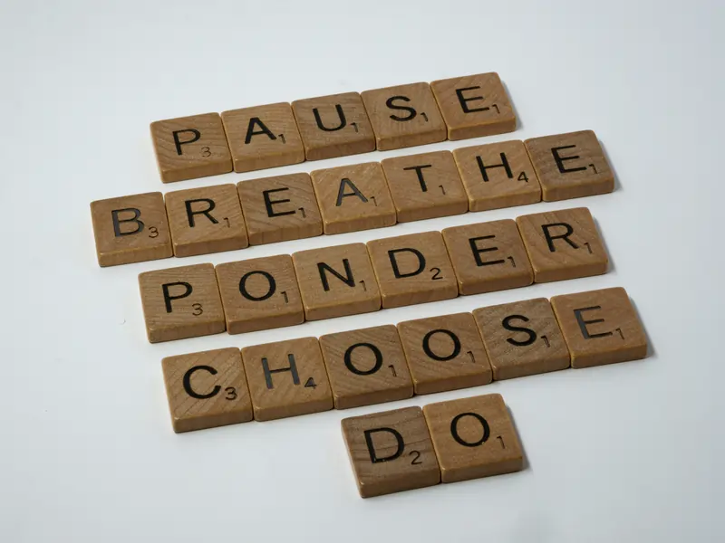

4-4-6 Relax Breath
Duration: 5-10 MinThis calming rhythm helps activate your parasympathetic nervous system — the “rest and restore” mode of the body. By extending the exhale, this practice naturally lowers the heart rate and allows the mind to settle. Perfect for winding down after a long day or preparing for restful sleep.

- Sit comfortably with a straight back and relaxed shoulders.
- Inhale through your nose for a count of 4, gently filling the belly.
- Hold the breath softly for 4 counts — avoid tension.
- Exhale slowly through the mouth for 6 counts, letting your whole body soften.
- Repeat 6–10 rounds, focusing on the smoothness of your breath.
- If the counts feel difficult, shorten them—comfort is more important than perfection.